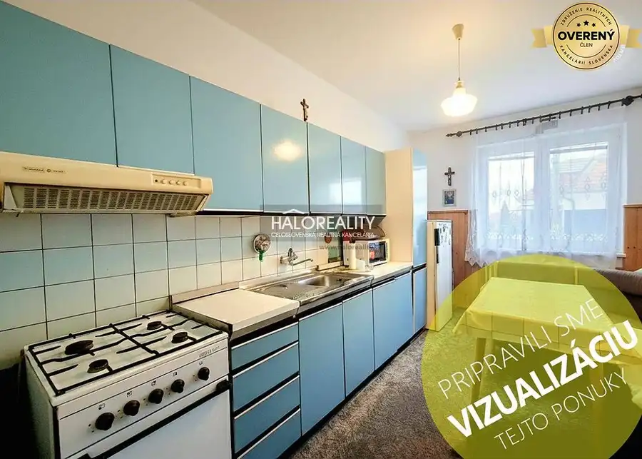
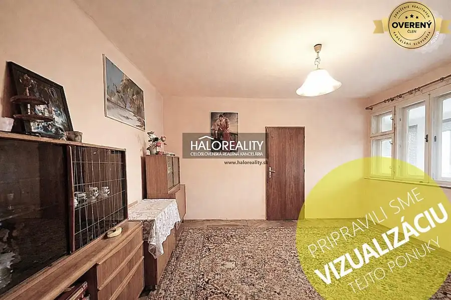
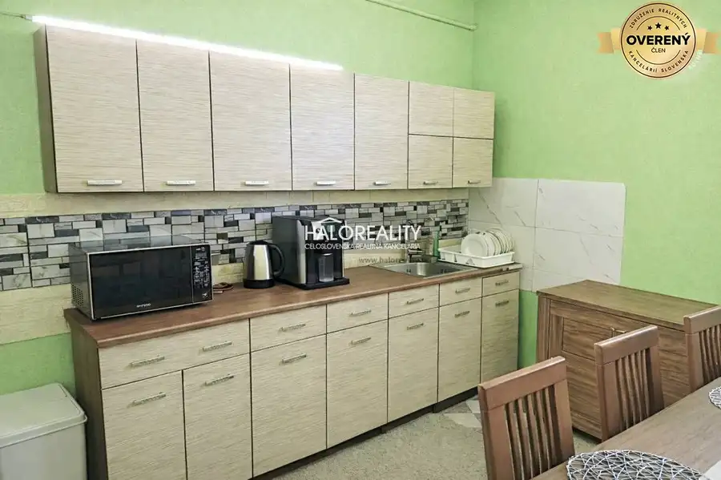

Predaj · Rodinné domy
Predaj, rodinný dom Svodín, štvorizbový na priestran...
Svodín
98 000 €445 € za m²
- Dispozícia4-izbový
- Plocha220 m²
- Stavpôvodný
- Vlastníctvoosobné
- Energetická triedaG
O nehnuteľnosti
Ponúkame Vám praktický, dobre dispozične riešený 4-izbový dvojpodlažný rodinný dom so zastavanou plochou 144m2 situovaný na rozsiahlom pozemku o rozlohe 3086m2.
DISPOZÍCIA:
Na prízemí sa nachádza vstupná predsieň, priestranná obývacia izba s klenbou a kuchyňa.
Na poschodí je umiestnená nočná časť: spálňa so šatníkom a balkónom, 2x izba, kúpeľňa s vaňou a toaletou, povala.
V suteréne sa nachádza...
Viac info na našom webe .
Parametre
| Rozloha pozemku | 3086 m² |
|---|---|
| Celková rozloha | 220 m² |
| Úžitková plocha | 220 m² |
| Poschodie | neuvedené |
| Počet izieb | 4 |
| Vlastníctvo | osobné |
| Stav | pôvodný |
| Balkón | nie |
| Lódžia | nie |
| Garáž | áno |
| Výťah | nie |
| Klimatizácia | nie |
| Energetický certifikát | G |
| Dátum zverejnenia | 8. 6. 2026 |
Kde to je
Ďalšie ponuky
Celá ponukaMohlo by Vás zaujímať

Rodinné domy9 87 990 €Predaj, rodinný dom Zemné, štvorizbový, dvojpodlažný Zemné 4-izbový160 m² Ponúkame Vám na predaj 4-izbový poschodový rodinný dom v obci Zemné. Rodinný dom s úžitkovou plochou 160m2 sa rozprestiera na krásnom rovinatom…
Rodinné domy9 98 990 €Predaj, rodinný dom Kolárovo, štvorizbový, čiastočná... Kolárovo 4-izbový1 m² Ponúkame Vám na predaj štvorizbový rodinný dom po čiastočnej rekonštrukcii v meste Kolárovo. Rodinný dom so zastavanou plochou 128 m2 sa rozprestiera…
Rodinné domy9 105 990 €Predaj, rodinný dom Tvrdošovce, štvorizbový, čiastoč... Tvrdošovce 4-izbový100 m² Ponúkame Vám na predaj štvorizbový rodinný dom po čiastočnej rekonštrukcii v obci Tvrdošovce. Rodinný dom so zastavanou plochou 125 m2 sa…